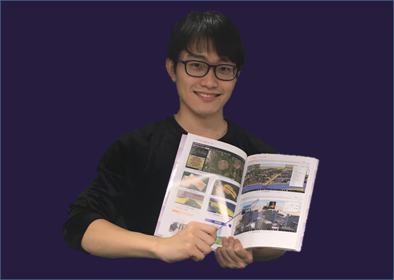
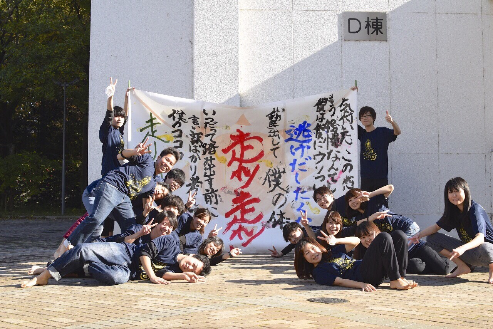
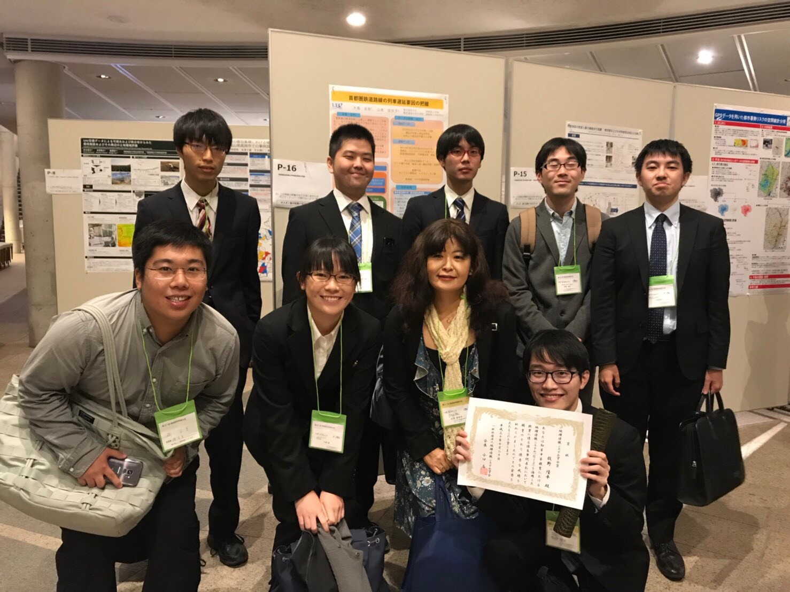
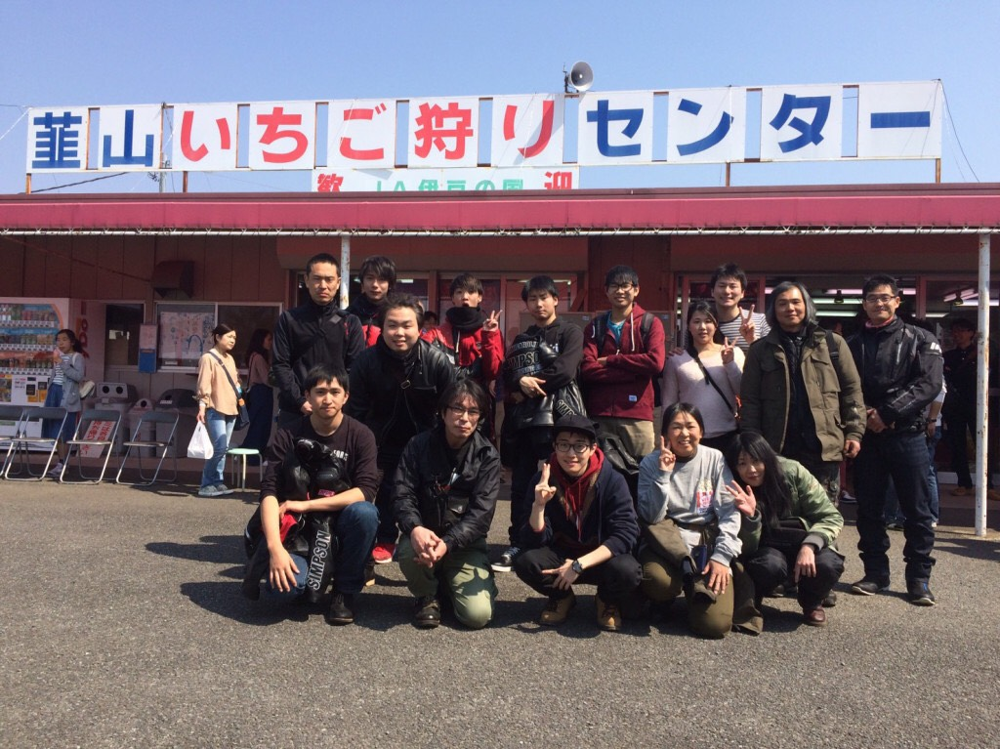

プロフィール

2013.3 宮崎日本大学高等学校卒業
2013.4 電気通信大学 入学
2016.4 電気通信大学 山本佳世子研究室配属
2017.3 電気通信大学 卒業
2017.4 電気通信大学大学院 入学
2017.6 UECものづくりコンテスト2017 優秀賞 受賞
2017.10 Geoアクティビティコンテスト2017 教育効果賞 受賞
2018.10 初等中等教育におけるGISを活用した授業に係る優良事例表彰 地理情報システム学会賞 受賞
2018.10 地理情報システム学会 大会優秀発表賞 受賞
2019.3 電気通信大学大学院 卒業見込み
・プログラミングをまったくやったことがないところからチャレンジ
パソコンに詳しいとか、パソコンが得意とかいうことはまったくありませんでしたので、情報学を選んだのは、あこがれが大きいです。
情報分野は、これから先すごく発展するだろうなという期待感がありましたし、プログラミングなどまったくやったことがない新しいことにチャレンジしてみたいという気持ちから志望しました。
学びの中でITの可能性は見えていたのですが、決定的だったのは、５年ほど前に見たドラマ『リッチマン、プアウーマン』でした。
このドラマは、イケメン俳優が若くして起業したIT社長を演じ、これまでになかったサービスを作って社会を巻き込んでいくという物語。
これで社会に大きな影響を与えるITの可能性に刺激を受け、なによりカリスマぶりが最高にかっこよかったですね。
自分もそんな風に世の中にないシステムやサービスを作ってみたいとあこがれ、電通大に進学しました。(スタディサプリ（リクルート）でのインタビューより)
学部生時のサークル活動

2013 同じクラスの学生たちと書Do!部の設立
2014 書Do!部が大学準公認サークルに
2015 書Do!部が大学公認サークルに
Twitter:@Shodo_Uec
山本佳世子研究室所属
山本佳世子研究室では、デジタル地図などと呼ばれる「GIS」の有効活用をテーマに研究しています。GISとは「Geographic Information Systems」の略で、日本語では「地図情報システム」と訳されます。このGISを活用して、さまざまな社会問題の解決に役立てようと取り組んでいます。
趣味1：ツーリング

二輪免許を取得。行きつけのバイク屋さん（オートサービス翔）のツーリングイベントにちょくちょく顔を出すようになりました。
いろんな場所に行き、写真を撮ったりご当地グルメを堪能したりすることが好きです。
趣味2：サイクリング
更新予定
趣味3：ゲーム・漫画
更新予定